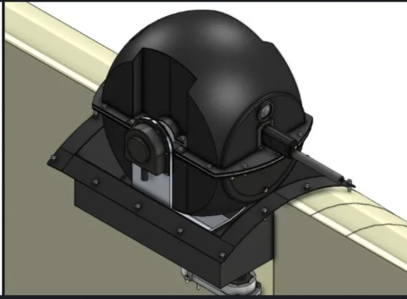

Compact Defensive
Turret System
SPONSOR — ING ROBOTIC AVIATION INC.
Abstract
The purpose of this project is to present the design solution proposed for a compact defensive turret system for ING Robotic Aviation Inc. capable of neutralizing drone attacks while respecting size, mass, and power limitations.
The system incorporates a 12-gauge shotgun with a 50-round magazine into a two-axis pan and tilt which is able of a continuous 360° azimuth rotation and 90° elevation. The design also includes a recoil management mechanism, a surveillance system to be able to operate the system in both day and night conditions, and a sealed structure intended for all-weather service.
To improve the overall performance of the system, several critical components were analyzed and optimized, including the tilt shaft, tilt arm, pan shaft, mounting plate, carriage plate damper interface, and guide rods. These elements were evaluated with respect to structural strength, recoil response, mass, and aerodynamic drag to be able to satisfy the project criteria while maintaining reliability and rigidity.
For the components, the most appropriate model was selected based on their unique rated capacity. The structural optimizations are automatically linked to a CAD model to instantly produce a visual representation of the optimal design.
At a glance
- Sponsor
- ING Robotic Aviation Inc.
- Purpose
- Neutralize drone attacks
- Constraints
- Size · mass · power
- Weapon
- 12-gauge shotgun · 50-round mag
- Azimuth
- 360° continuous
- Elevation
- 90°
- Subsystems
- Recoil mgmt · Surveillance · Sealed structure
- Service
- Day · night · all-weather
Optimized components
- Tilt shaft
- Tilt arm
- Pan shaft
- Mounting plate
- Carriage plate damper interface
- Guide rods
Evaluation criteria
- Structural strength
- Recoil response
- Mass
- Aerodynamic drag
